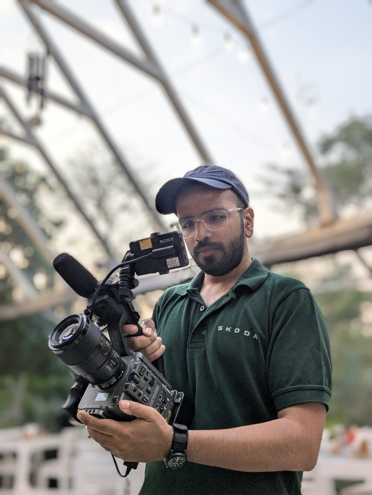
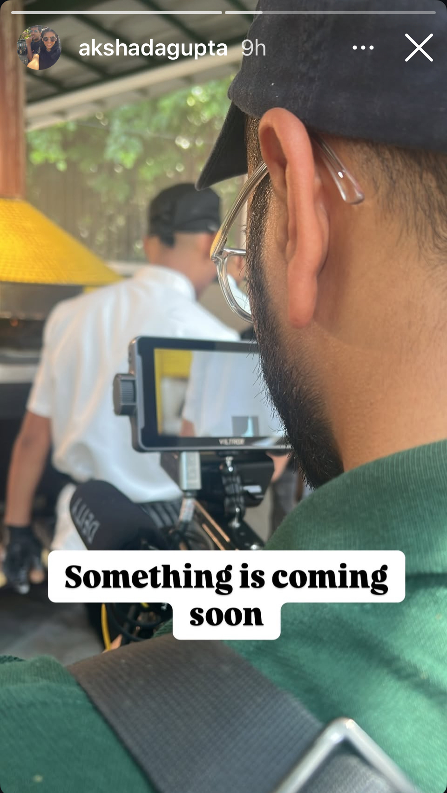
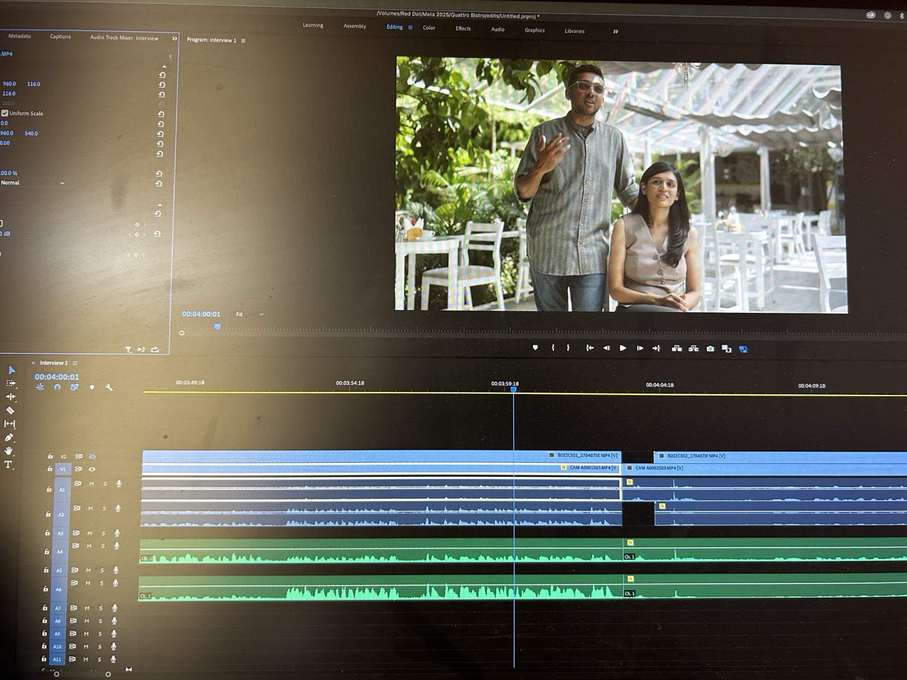

A local restaurant finding new ways to turn attention into connection.
For Meta, I produced and shot a success story around Quattro Bistro in Lonavala. The film follows owners Ashish and Akshada Gupta and the business they built in a destination known for weekend visitors from Mumbai and Pune.
The story looks at the restaurant's identity, its approach to hospitality, and the way Meta advertising and WhatsApp Business became part of how the team reached customers and created personalised dining experiences.

Small crew. Real conversations. A business story built around people.
The shoot was designed to stay close to the restaurant and its owners. Interviews, observational moments and details from the space gave the film a sense of the people behind the business rather than treating the restaurant simply as a product.



Business films work best when the business is allowed to feel like a story — with people, choices, uncertainty and ambition at the centre.